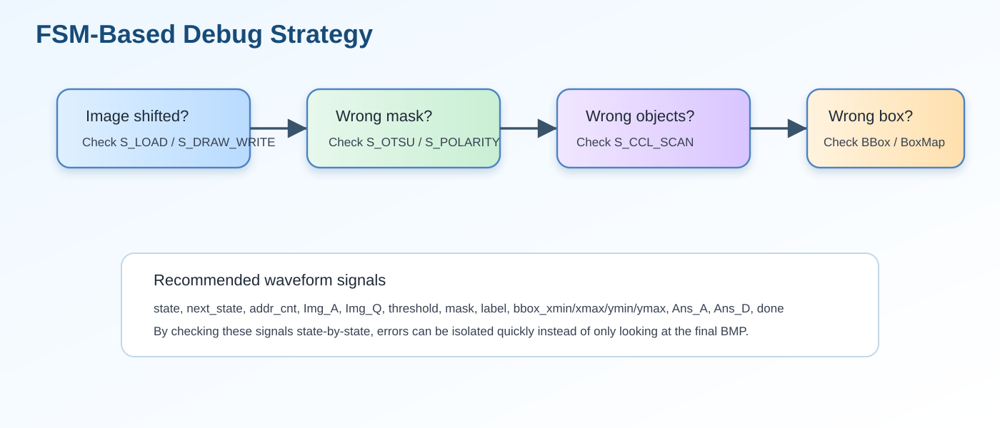

這一段在整個作業流程中的角色
這是整份 code 最重要的核心階段。它把 Gaussian、Threshold、Polarity 結果轉成 component labels，並同時累積出 bbox。
這裡就是『掃描 → 看四個鄰居 → 決定 label → 必要時做 union』的主戰場。你可以把它視為整份作業中最核心的一頁。
S_LB_INIT2S_CCL_SCANunion_pairupdate_bbox_taskrow_label

P1 mask
點擊可放大
P1 labels
點擊可放大
fsm debug strategy
點擊可放大 S_LB_INIT2: begin
case (lb_phase)
2'd0: begin
Ur_CEN<=1'b0; Ur_WEN<=1'b1;
Ur_A <= {lb_init_row, lb_col};
lb_phase<=2'd1;
end
2'd1: begin
Ur_CEN<=1'b0; Ur_WEN<=1'b1;
Ur_A <= {lb_init_row, lb_col};
lb_phase<=2'd2;
end
2'd2: begin
case (lb_seq)
// fixed initial mapping: prev=bank0(row1), curr=bank1(row0), next=bank2(row1)
2'd0: linebuf_bank0[lb_col]<=Ur_Q[7:0];
2'd1: linebuf_bank1[lb_col]<=Ur_Q[7:0];
2'd2: linebuf_bank2[lb_col]<=Ur_Q[7:0];
default: ;
endcase
lb_phase<=2'd0;
if (lb_col==8'd255) begin
lb_col<=8'd0;
if (lb_seq==2'd2) begin
addr_cnt<=16'd0;
state<=S_CCL_SCAN;
end else lb_seq<=lb_seq+2'd1;
end else lb_col<=lb_col+8'd1;
end
default: lb_phase<=2'd0;
endcase
end
// -----------------------------------------------
// S_CCL_SCAN
// -----------------------------------------------
S_CCL_SCAN: begin
if (ccl_fg) begin
if (ccl_new_label) begin
parent[next_label]<=next_label;
bbox_valid[next_label] <=1'b1;
bbox_border[next_label]<=((ccl_x==8'd0)||(ccl_x==8'd255)||(ccl_y==8'd0)||(ccl_y==8'd255));
bbox_xmin[next_label]<=ccl_x; bbox_xmax[next_label]<=ccl_x;
bbox_ymin[next_label]<=ccl_y; bbox_ymax[next_label]<=ccl_y;
if (next_label<MAX_LABEL_IDX) next_label<=next_label+9'd1;
else next_label<=MAX_LABEL_IDX;
end else begin
union_pair(ccl_chosen_label,ccl_n_w);
union_pair(ccl_chosen_label,ccl_n_nw);
union_pair(ccl_chosen_label,ccl_n_n);
union_pair(ccl_chosen_label,ccl_n_ne);
update_bbox_task(ccl_chosen_label,ccl_x,ccl_y);
end
end
nw_label_hold <= row_label[ccl_x];
row_label[ccl_x] <= cur_label_comb;
left_label <= cur_label_comb;
if (addr_cnt==NPIX_LAST) begin
label_idx<=9'd1; edge_stage<=2'd0; edge_ctr<=8'd0;
addr_cnt<=16'd0; req_cnt<=17'd0;
state<=S_BBOX_INIT;
end else if (ccl_x==8'd255) begin
addr_cnt<=addr_cnt+16'd1;
// V16: explicitly reset left-side scan state at row boundary.
left_label <= 9'd0;
nw_label_hold <= 9'd0;
// V16 reflect-101 bottom fix: for next y=255, below row must be reflect(256)=254.
lb_row <= (ccl_y==8'd254) ? 8'd254 : (ccl_y+8'd2);
lb_col<=8'd0; lb_phase<=2'd0;
state<=S_LB_ROW2;
end else addr_cnt<=addr_cnt+16'd1;
end
// -----------------------------------------------
// S_LB_ROW2：CCL 跨列更新 line buffer，完成後回 S_CCL_SCAN
// -----------------------------------------------
| Line | 原始程式碼 | 流程分類 | 中文說明 |
|---|---|---|---|
| 700 | S_LB_INIT2: begin | 十三、CCL Line Buffer 初始化與 8-Connected CCL 掃描 | 進入狀態 S_LB_INIT2：初始化 CCL 階段的 line buffer。 |
| 701 | case (lb_phase) | 十三、CCL Line Buffer 初始化與 8-Connected CCL 掃描 | 開始 case 分支，根據 state 或 phase 執行不同控制流程。 |
| 702 | 2'd0: begin | 十三、CCL Line Buffer 初始化與 8-Connected CCL 掃描 | 此行屬於 十三、CCL Line Buffer 初始化與 8-Connected CCL 掃描，用來完成 drawBbox 的控制或資料路徑。 |
| 703 | Ur_CEN<=1'b0; Ur_WEN<=1'b1; | 十三、CCL Line Buffer 初始化與 8-Connected CCL 掃描 | 非阻塞指定，在 clock 邊緣更新暫存器；屬於 十三、CCL Line Buffer 初始化與 8-Connected CCL 掃描。 |
| 704 | Ur_A <= {lb_init_row, lb_col}; | 十三、CCL Line Buffer 初始化與 8-Connected CCL 掃描 | 非阻塞指定，在 clock 邊緣更新暫存器；屬於 十三、CCL Line Buffer 初始化與 8-Connected CCL 掃描。 |
| 705 | lb_phase<=2'd1; | 十三、CCL Line Buffer 初始化與 8-Connected CCL 掃描 | 非阻塞指定，在 clock 邊緣更新暫存器；屬於 十三、CCL Line Buffer 初始化與 8-Connected CCL 掃描。 |
| 706 | end | 十三、CCL Line Buffer 初始化與 8-Connected CCL 掃描 | 結束目前 begin-end 區塊。 |
| 707 | 2'd1: begin | 十三、CCL Line Buffer 初始化與 8-Connected CCL 掃描 | 此行屬於 十三、CCL Line Buffer 初始化與 8-Connected CCL 掃描，用來完成 drawBbox 的控制或資料路徑。 |
| 708 | Ur_CEN<=1'b0; Ur_WEN<=1'b1; | 十三、CCL Line Buffer 初始化與 8-Connected CCL 掃描 | 非阻塞指定，在 clock 邊緣更新暫存器；屬於 十三、CCL Line Buffer 初始化與 8-Connected CCL 掃描。 |
| 709 | Ur_A <= {lb_init_row, lb_col}; | 十三、CCL Line Buffer 初始化與 8-Connected CCL 掃描 | 非阻塞指定，在 clock 邊緣更新暫存器；屬於 十三、CCL Line Buffer 初始化與 8-Connected CCL 掃描。 |
| 710 | lb_phase<=2'd2; | 十三、CCL Line Buffer 初始化與 8-Connected CCL 掃描 | 非阻塞指定，在 clock 邊緣更新暫存器；屬於 十三、CCL Line Buffer 初始化與 8-Connected CCL 掃描。 |
| 711 | end | 十三、CCL Line Buffer 初始化與 8-Connected CCL 掃描 | 結束目前 begin-end 區塊。 |
| 712 | 2'd2: begin | 十三、CCL Line Buffer 初始化與 8-Connected CCL 掃描 | 此行屬於 十三、CCL Line Buffer 初始化與 8-Connected CCL 掃描，用來完成 drawBbox 的控制或資料路徑。 |
| 713 | case (lb_seq) | 十三、CCL Line Buffer 初始化與 8-Connected CCL 掃描 | 開始 case 分支，根據 state 或 phase 執行不同控制流程。 |
| 714 | // fixed initial mapping: prev=bank0(row1), curr=bank1(row0), next=bank2(row1) | 十三、CCL Line Buffer 初始化與 8-Connected CCL 掃描 | 原始註解，用來說明此段設計目的或注意事項。 |
| 715 | 2'd0: linebuf_bank0[lb_col]<=Ur_Q[7:0]; | 十三、CCL Line Buffer 初始化與 8-Connected CCL 掃描 | 非阻塞指定，在 clock 邊緣更新暫存器；屬於 十三、CCL Line Buffer 初始化與 8-Connected CCL 掃描。 |
| 716 | 2'd1: linebuf_bank1[lb_col]<=Ur_Q[7:0]; | 十三、CCL Line Buffer 初始化與 8-Connected CCL 掃描 | 非阻塞指定，在 clock 邊緣更新暫存器；屬於 十三、CCL Line Buffer 初始化與 8-Connected CCL 掃描。 |
| 717 | 2'd2: linebuf_bank2[lb_col]<=Ur_Q[7:0]; | 十三、CCL Line Buffer 初始化與 8-Connected CCL 掃描 | 非阻塞指定，在 clock 邊緣更新暫存器；屬於 十三、CCL Line Buffer 初始化與 8-Connected CCL 掃描。 |
| 718 | default: ; | 十三、CCL Line Buffer 初始化與 8-Connected CCL 掃描 | 此行屬於 十三、CCL Line Buffer 初始化與 8-Connected CCL 掃描，用來完成 drawBbox 的控制或資料路徑。 |
| 719 | endcase | 十三、CCL Line Buffer 初始化與 8-Connected CCL 掃描 | 結束 case 分支。 |
| 720 | lb_phase<=2'd0; | 十三、CCL Line Buffer 初始化與 8-Connected CCL 掃描 | 非阻塞指定，在 clock 邊緣更新暫存器；屬於 十三、CCL Line Buffer 初始化與 8-Connected CCL 掃描。 |
| 721 | if (lb_col==8'd255) begin | 十三、CCL Line Buffer 初始化與 8-Connected CCL 掃描 | 條件判斷，用來控制 十三、CCL Line Buffer 初始化與 8-Connected CCL 掃描 的流程分支、邊界條件或狀態轉移。 |
| 722 | lb_col<=8'd0; | 十三、CCL Line Buffer 初始化與 8-Connected CCL 掃描 | 非阻塞指定，在 clock 邊緣更新暫存器；屬於 十三、CCL Line Buffer 初始化與 8-Connected CCL 掃描。 |
| 723 | if (lb_seq==2'd2) begin | 十三、CCL Line Buffer 初始化與 8-Connected CCL 掃描 | 條件判斷，用來控制 十三、CCL Line Buffer 初始化與 8-Connected CCL 掃描 的流程分支、邊界條件或狀態轉移。 |
| 724 | addr_cnt<=16'd0; | 十三、CCL Line Buffer 初始化與 8-Connected CCL 掃描 | 非阻塞指定，在 clock 邊緣更新暫存器；屬於 十三、CCL Line Buffer 初始化與 8-Connected CCL 掃描。 |
| 725 | state<=S_CCL_SCAN; | 十三、CCL Line Buffer 初始化與 8-Connected CCL 掃描 | 非阻塞指定，在 clock 邊緣更新暫存器；屬於 十三、CCL Line Buffer 初始化與 8-Connected CCL 掃描。 |
| 726 | end else lb_seq<=lb_seq+2'd1; | 十三、CCL Line Buffer 初始化與 8-Connected CCL 掃描 | 非阻塞指定，在 clock 邊緣更新暫存器；屬於 十三、CCL Line Buffer 初始化與 8-Connected CCL 掃描。 |
| 727 | end else lb_col<=lb_col+8'd1; | 十三、CCL Line Buffer 初始化與 8-Connected CCL 掃描 | 非阻塞指定，在 clock 邊緣更新暫存器；屬於 十三、CCL Line Buffer 初始化與 8-Connected CCL 掃描。 |
| 728 | end | 十三、CCL Line Buffer 初始化與 8-Connected CCL 掃描 | 結束目前 begin-end 區塊。 |
| 729 | default: lb_phase<=2'd0; | 十三、CCL Line Buffer 初始化與 8-Connected CCL 掃描 | 非阻塞指定，在 clock 邊緣更新暫存器；屬於 十三、CCL Line Buffer 初始化與 8-Connected CCL 掃描。 |
| 730 | endcase | 十三、CCL Line Buffer 初始化與 8-Connected CCL 掃描 | 結束 case 分支。 |
| 731 | end | 十三、CCL Line Buffer 初始化與 8-Connected CCL 掃描 | 結束目前 begin-end 區塊。 |
| 732 | 十三、CCL Line Buffer 初始化與 8-Connected CCL 掃描 | 空白行，用來分隔段落，提升可讀性。 | |
| 733 | // ----------------------------------------------- | 十三、CCL Line Buffer 初始化與 8-Connected CCL 掃描 | 原始註解，用來說明此段設計目的或注意事項。 |
| 734 | // S_CCL_SCAN | 十三、CCL Line Buffer 初始化與 8-Connected CCL 掃描 | 原始註解，用來說明此段設計目的或注意事項。 |
| 735 | // ----------------------------------------------- | 十三、CCL Line Buffer 初始化與 8-Connected CCL 掃描 | 原始註解，用來說明此段設計目的或注意事項。 |
| 736 | S_CCL_SCAN: begin | 十三、CCL Line Buffer 初始化與 8-Connected CCL 掃描 | 進入狀態 S_CCL_SCAN：即時計算 binary mask，做 8-connected CCL，並同步更新 bbox。 |
若要看完整逐行內容，請進入「逐行說明」頁。
中文重點整理
- 程式位置：Lines 700–777
- 此段主要目標：重新載入 CCL line buffer，並在 S_CCL_SCAN 中做 binary mask、label assignment、union 與 bbox update。
- 閱讀建議：先看相關圖檔，再看原始 code，最後看逐行說明示範。
- 對報告的幫助：這一頁的圖片與說明很適合直接當作一個報告子段落。